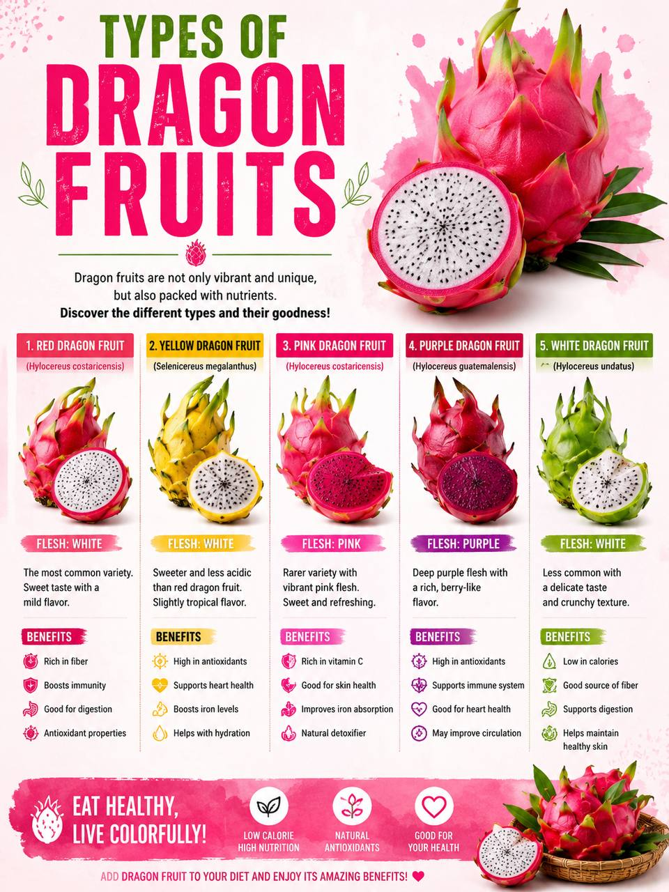
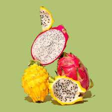

HISTORY
Dragon fruit, also known as pitaya, originated in the tropical regions of southern Mexico and Central America. It was cultivated by indigenous peoples for centuries before being introduced to other parts of the world. In the 19th century, French traders brought dragon fruit to Southeast Asia, where it adapted well to the climate and became widely grown in countries such as Vietnam, Thailand, and Malaysia. The fruit gets its name from its bright pink or yellow skin with green scales that resemble a dragon’s appearance in Asian mythology. Today, dragon fruit is popular worldwide for its unique look, sweet taste, and nutritional benefits.

TYPES OF Dragon Fruit
- Red Dragon Fruit
- Yellow Dragon Fruit
- Pink Dragon Fruit
- Purple Dragon Fruit
- White Dragon Fruit
HEALTH BENEFITS
- Helps Control Blood Sugar - Fiber can aid in regulating blood sugar levels.
- Promotes Healthy Skin - Vitamins and antioxidants contribute to healthier skin.
- Low in Calories - Suitable for a healthy diet and weight management.
- Supports Gut Health - Contains prebiotics that nourish beneficial gut bacteria.

HOW TO GROW DRAGON FRUIT
Choose Healthy Seeds
Plant a cutting in well-drained soil.
Prepare Rich Soil
Place the seedling in the hole and cover the roots with soil.
Water Regularly
Water regularly, but do not overwater.
Provide Partial Shade
Provide a support pole for the plant to climb.
Apply Fertilizer
Wait for flowering and fruiting, then harvest when the fruit turns bright pink or yellow.
FUN FACTS
- Longan water is currently a viral drink trend in Malaysia!
- Many people enjoy it because it is refreshing, naturally sweet, and often served chilled with fresh longan, ice and lemon.
- Its popularity on social media has made it a favorite beverage, especially during hot weather and festive season.